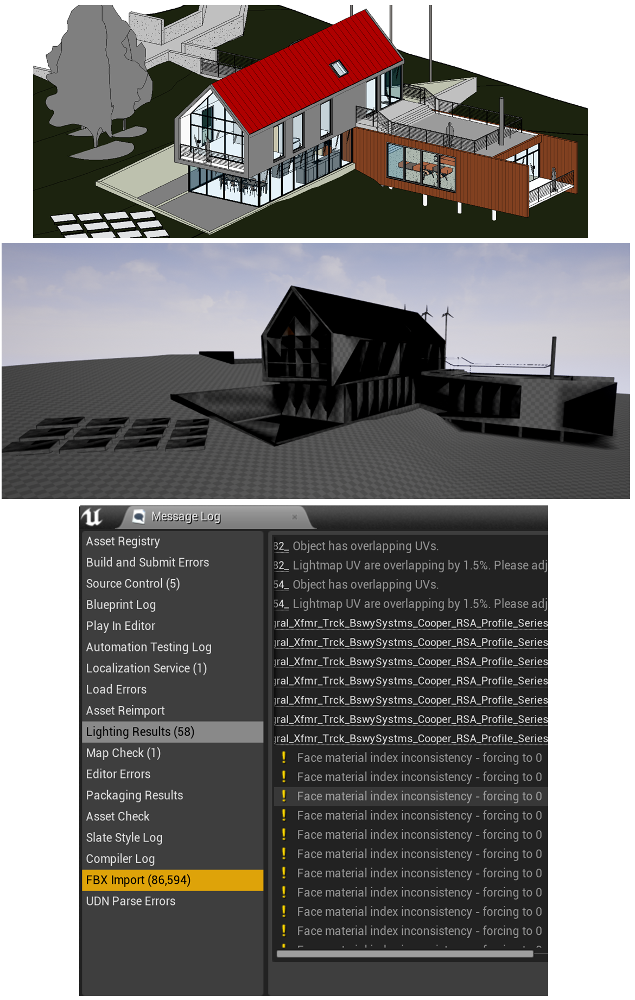
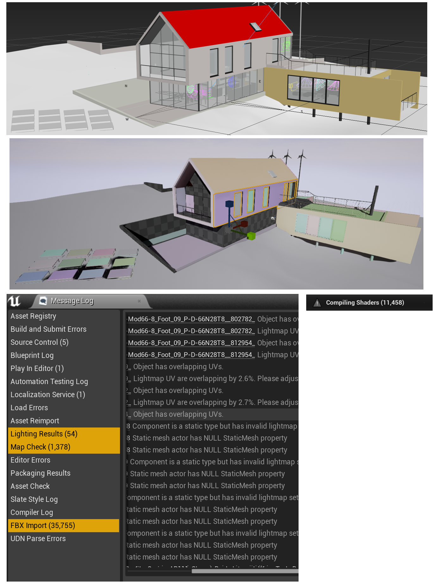
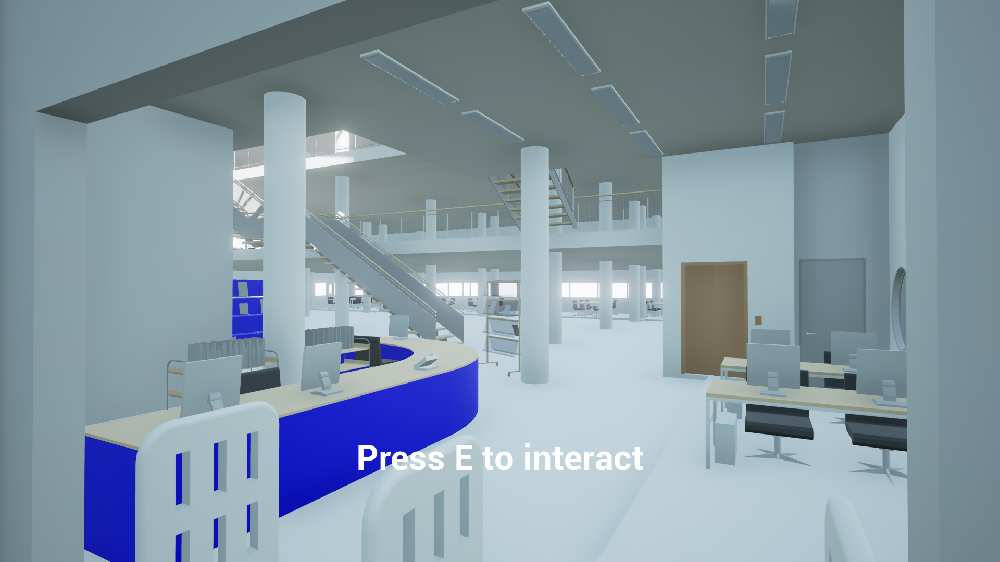
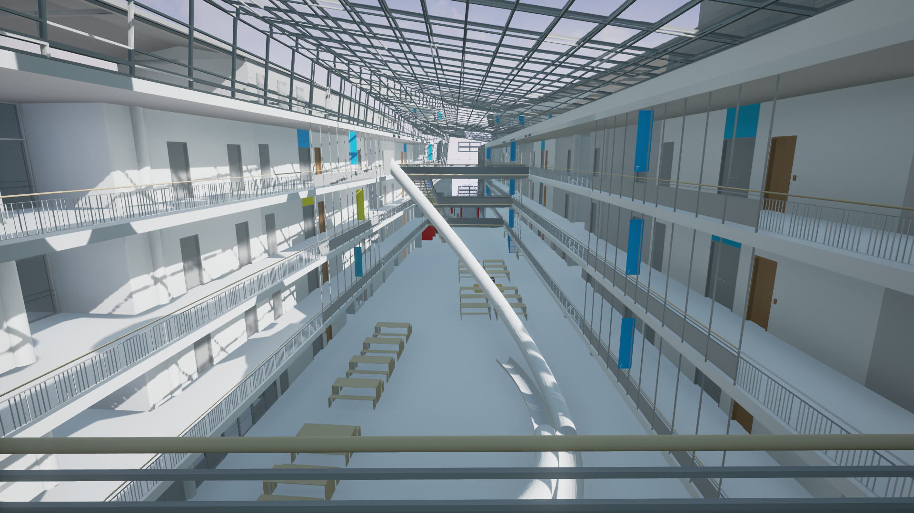
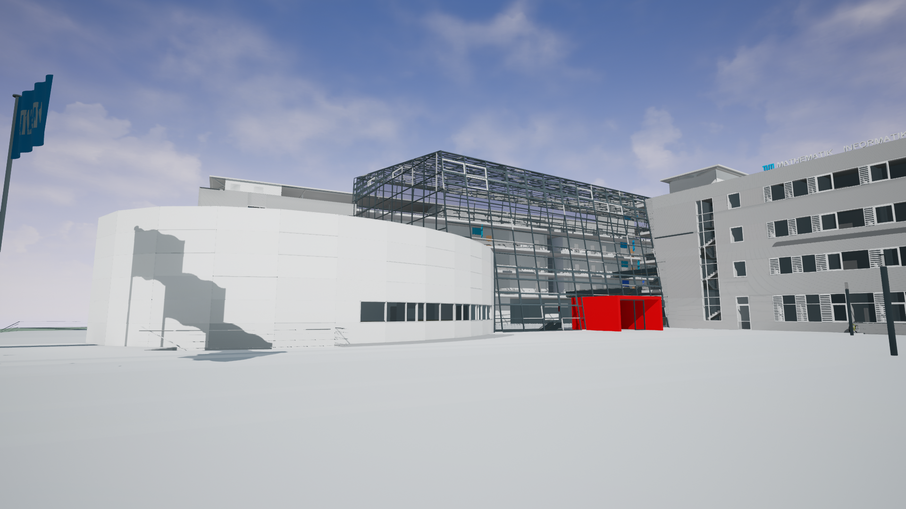

IFC to Unreal
Overview
I worked on this during an interdisciplinary project between the chair of Computational Modeling and Simulation and the Compute Graphics chair at TUM. The goal was to load large data sets from architectural IFC files into Unreal Engine 4 for real-time visualization.
Details
Extract IFC geometry
All IFC objects have a certain shape representation which can take different forms, for example CSG, NURBS or SweptSolids. In order to use them in an engine these have to be converted into triangle mesh representations.
The first thing I tried was to use existing programs that can handle IFC files. I used Revit and 3DSMax. Unfortunately the results were not really good. As you can see in the following images the first result by export as .fbx from Revit. The second by linking Revit to 3DSMax and exporting the .fbx. Because our data set was quite large reworking each object was not feasible.
What worked for us was to use IfcOpenShell to parse the geometry and output it as .obj files. Additionally I added another output file containing semantic information like doors and stairs which should be controllable inside of Unreal Engine.
Improve geometry with Blender
The geometry was correct for the most parts with IfcOpenShell. Unfortunately, the UV coordinates were not exported correctly or were not normalized. To bake the lighting in Unreal Engine I had to fix this. For this I loaded the .obj files into Blender and wrote a script to perform the automatic UV unwrapping from Blender. Additionally I removed parts of the meshes. For example the library of our building had all books as triangle meshes. By removing them I reduced the amount of vertices by 10 millions.
Unreal Engine import
I looked into loading custom meshes into Unreal Engine but decided against that in favor of the existing fbx pipeline. To use this I created a two step process. First I would import the geometry from the .fbx files as individual objects. This would create collision volumes and import the correct materials. The second step was to combine the individual meshes and create a single building from them. To do this I created a new Actor class for the Ifc buildings. When adding one of these to the scene a .ifcInfo file with semantic information created during the IfcOpenShell export is loaded. The result is one actor with mesh instances for static geometry and special objects for doors and other semantic objects.
Data Set
The data set we got was our mathematics - informatics building consisting of north- and south- buildings, library, main hall and lecture hall. All in all this resulted in around 45k individual objects and 9.6 million vertices. With these amounts of data I reached the limits of my pc. Fortunately we were able to perform the most demanding task on a server with enough RAM. The peak RAM usage for light baking, the most expensive operation was around 60GB.
Results
While the initial loading time is a bit long the final project does perform surprisingly well, considering that all objects are just brute forced into the engine without any optimizations.
